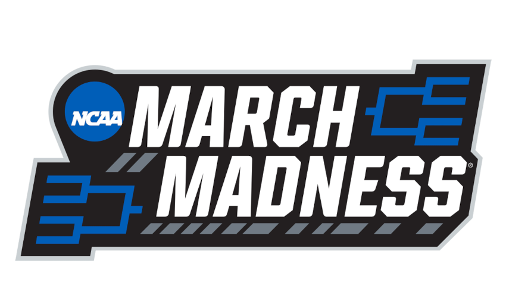
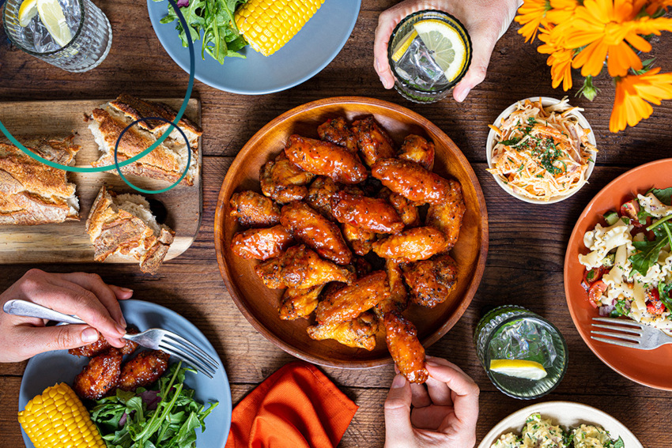

March Madness Bracket Predictior
- Developed a Support Vector Machine that implemented a pipeline to predict the outcomes of NCAA March Madness games.
- Web-scraped team statistics from previous seasons to train a model that achieved an 85.7% accuracy when tested on a dataset comprising 64 matchups.
- Final bracket produced by model placed in the 97th percentile.

Food Recommendation System
- Implementing a neural network to offer users food recommendations based on their personal preferences.
- Work in Progress